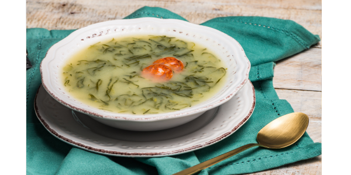

RECEITA - CALDO VERDE
INGREDIENTES
- 4 batatas médias
- 1 colher de sopa de óleo
- 5 xícaras de chá de água
- 1 linguiça calabresa defumada cortada em rodelas
- 1 tablete de caldo de galinha
- 1 colher de sopa rasa de sal ou a gosto
- 1 xícara de chá de couve manteiga cortada em tiras
MODO DE PREPARO
- Na panela de pressão, coloque a batata, o caldo de galinha, o óleo, a água e sal.
- Cozinhe por cerca de 10 minutos (começar a contar o tempo depois que a panela começar a chiar) até a batata desmanchar.
- Em seguida, bata tudo no liquidificador.
- Acrescente as rodelas de calabresa e ferva.
- Desligue o fogo e adicione a couve-manteiga.
- Na hora de servir, coloque um fio de azeite ou croutons
Voltar